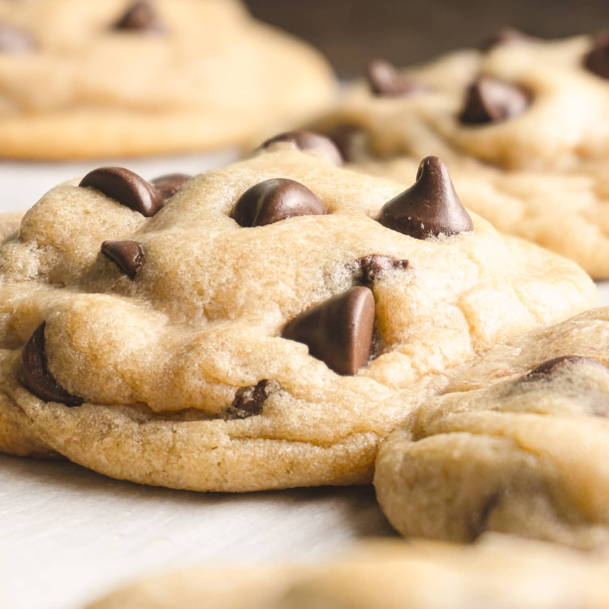

Best Soft Chocolate Chip Cookes

Soft and Fluffy Chocolate Chip Cookies
This recipe produces the best chocolate chip cookies. This recipe comes from years of my wife playing around with recipes. She would make a batch and change one thing at a time until she got it perfect. And, when I say perfect, I mean PERFECT!
This recipe is a staple in our house. We do not even buy any type of cookies at the store any more because we would rather induldge in these freshly baked cookies. Enjoy!
Ingredients
When measuring these ingredients, we found that it is necessary to use a level to make sure you are getting the exact measurement. We used to just grab a cup of flour or half a cup of sugar and it was a little less or a little more we did not worry about it. What we found, is that it does indeed matter. Try to get as percise of measurments as possible.
- 8 Tbsp Salted Butter
- 1/2 cup white sugar
- 1/4 cup packed brown sugar
- 1 tsp vanilla extract
- 1 egg
- 1/4 tsp salt
- 1/2 tsp baking soda
- 1 1/2 cup All Purpose Flour
- 3/4 Chocolate Chips
- 3/4 tsp baking power
Steps
These steps are pretty straight forward and easy to follow.
- Microwave butter to barely melted (should not be too hot, but should be a liquid).
- Beat butter with white sugar and brown sugar until creamy.
- Add Vanilla and egg and beat on low BRIEFLY
- Add the flour, baking soda, salt, baking powder. Mix until crumbles form. Use hands to press crumbles togher into a dough ball (should be at the state where it is between wet and dry).
- Add chocolate chips and mix in with hands
- Make small golfball sized balls. At this point you can freeze them or bake immediately.
- Bake at 350F until cookies look puffy, dry and barely golden. The time will depend on your oven and if the cookies are frozen or not. When we freeze ours, it takes about 10 minutes for them to be perfect. (you might have to play around with this step to find the exact right time needed.